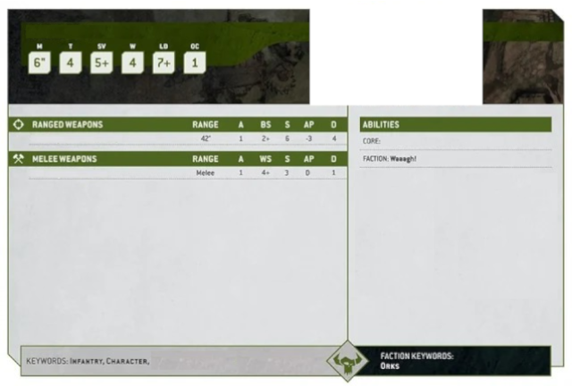
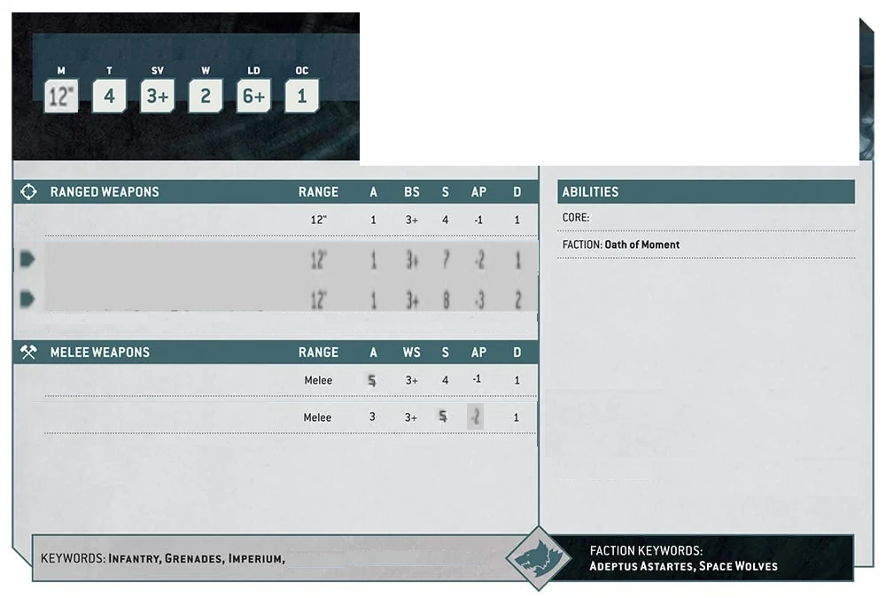

Archy who kant mizz
Archy's Long Shoota
Cowardly Punch
[Precision, Heavy,
Devastating Wounds]
Lone Operative, Scout 6"
Archy Kant Mizz(Psychic) - If Archy did not move
this turn and is not shooting at a Psyker unit, he
gains +1 to Hit and +200" of range. If this makes him
hit at 1+, he automatically scores a natural 6 on Hit.
If Archy ever misses(fails to hit in Shooting) the game
crushes, ends and your enemy scores max points,
wheras you score none.
Head Shot - If Archy shoots at an Infantry Unit and
scores a natural 6 on Hit, Archy automatically kills 1
visible model from that unit, instead of resolving further rolls.
Psyker, Archy
Archy model is equiped with 1 of each weapons
presented here.
Archy has 28mm base
1 Model

Skyclaws
Heavy Bolt Pistol
Plasma Pistol-normal
Plasma Pistol-supercharge
Fenrisian-pattern chainsword
Master-crafted Power Weapon
[Hazardous]
[Sustain Hits 1]
Deep Strike, Scout 7"
Eliminate and Redeploy - This Unit can indtead
of Consolidation in Fight Phase, choose to
immediatly Return to Strategic Reserves.
Relentless Charge - This unit may re-roll Charge
rolls if it didn't enter the battle field this turn, or +1 to
its charge rolls if it did.
Fly, Jump Pack, Skyclaws

Skyclaws
- Each model in this unit may choose to replace their Heavy Bolt
Pistols with Storm Shields
- Each model in this unit may choose to replace their Master-crafted
Power Weapon with Fenris-pattern Chainsword
- Sergant may replace his Heavy Bolt Pistol with Plasma Pistol
- 1 per 5 models in this unit may choose to replace their Heavy Bolt
Pistols with Plasma Pistols
- 1 Skyclaw Sergant
- 4-9 Skyclaws
- cost for 4+Sergant
- cost for 5-9+Sergant
- Each model is equiped Heavy Bolt Pistol
and Master-crafted Power Weapon
Assault Intercesors with Jump Packs
Storm Shields - Models with Storm
Shields gain 4+ Invulnerable Save.